| 日付 | 2022年3月21日（月） |
|---|---|
| メンバー | 家族（妻、長女・11歳、長男・8歳） |
| アクセス | 車 |
昨日は夫婦のみで山に行ったが、3連休に少しは子供を運動させようと
清水公園のアスレチックに連れて行くことにする。
花粉の季節ではあるが、アスレチックであれば子供もモチベーションが上がるようだ。
2017年に一度訪問していていたが、早朝に雨が降ったため
アスレチックは閉鎖されてしまっていた。5年越しのリベンジだ。
駐車場に到着。昨夜も雨が降って、また閉鎖の再来かと危惧したが、
移動中にインターネットで無事オープンすることを確認。
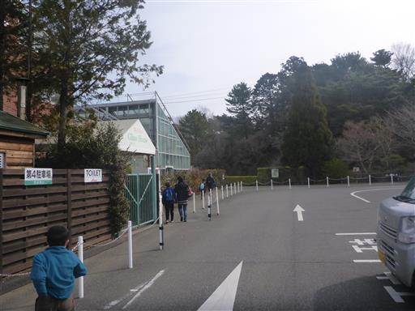
アスレチック以外にもいろいろな設備がある大きな公園だ。
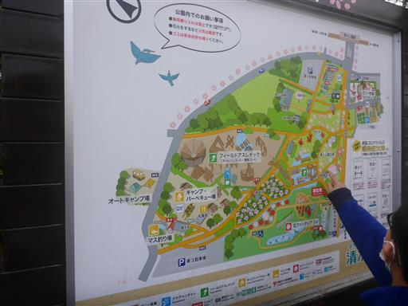
水上アスレチックが見えてくる。
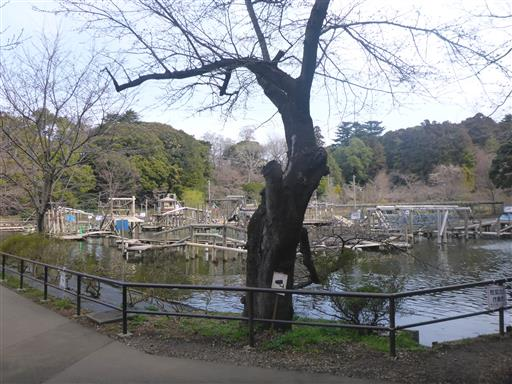
全部で3コースある。アスレチックの数は非常に多い。
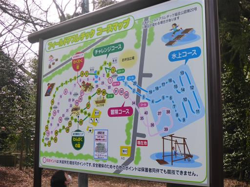
出発が遅れたために、だいぶ列で待たされる。
出発時、雨で閉鎖かもと思うと、なかなかキビキビ動けなかった。
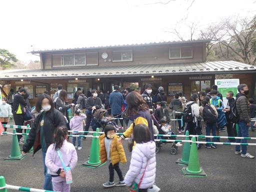
初っ端から濡れるのは嫌なので、チャレンジコースからスタート。
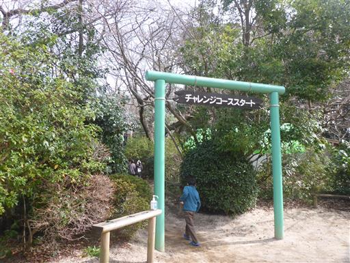
最初は超簡単。
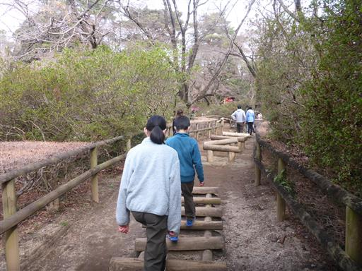
前日までの予約による人数制限ありなのだが、結構人が多く待たされる。
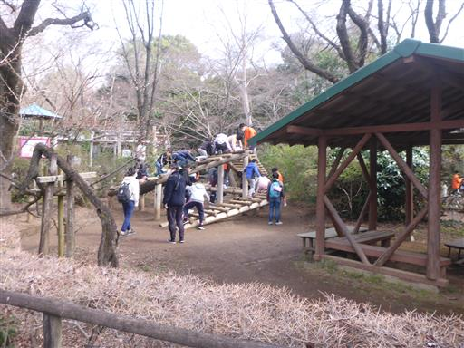
30番くらいまでワープして、ここから始める。
1番からやると全アスレチックで待たされるので時間効率が非常に悪い。
途中から始めるのが吉だ。
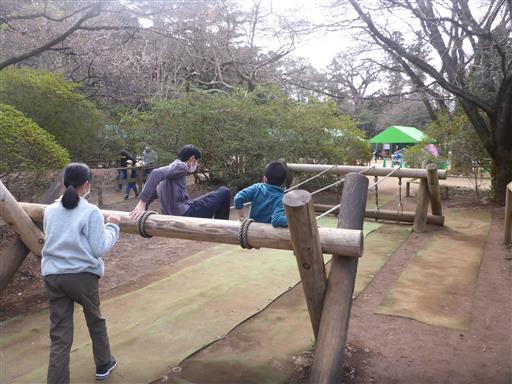
ロープブランコを進む。
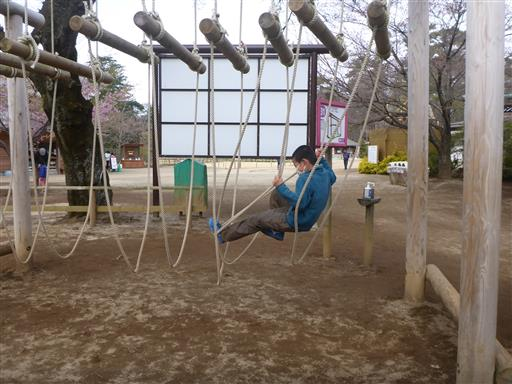
ローラーごろごろ。側面の木にぶつかって進みにくい。
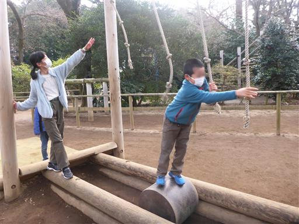
水上アスレチックが見えてきた。このコースでも少しだけ水上アスレチックがある。
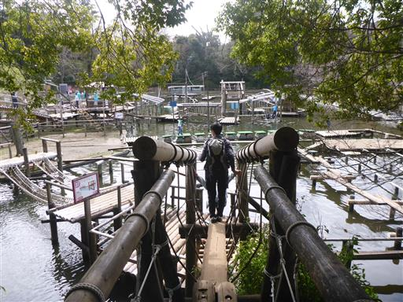
落ちることはまずない、簡単なものが多い。
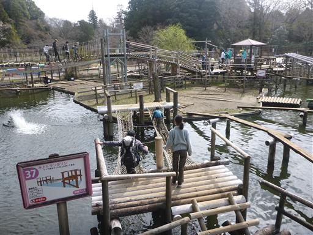
筏渡り。木は大きく重くてほぼ揺れないので、こちらも大丈夫。
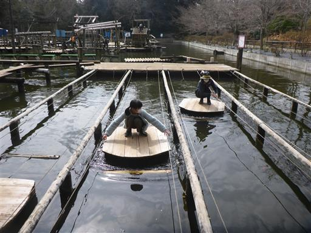
丸太の階段。
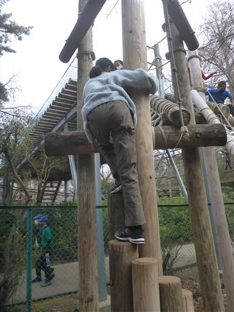
水上コースがあまり混んでいなさそうだったので、リスクを冒して水上コースに行くことにする。
みんな濡れるのは嫌なので、水上コースは後回しにしているようだ。
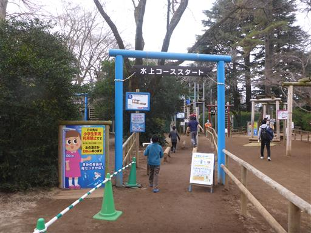
水上コースの入口。

いきなり最難関のターザンロープ＋ネット。
こちらは飛ばしていく人が多い。息子はあとちょっとでクリアできず足を濡らしてしまう。
自分はクリア、そして娘は落下…
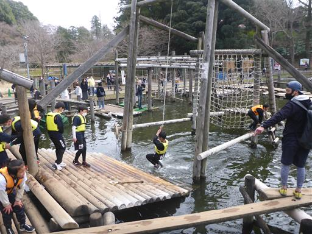
娘の着替えの間、滑り台で遊ぶ。息子は靴下だけ交換。
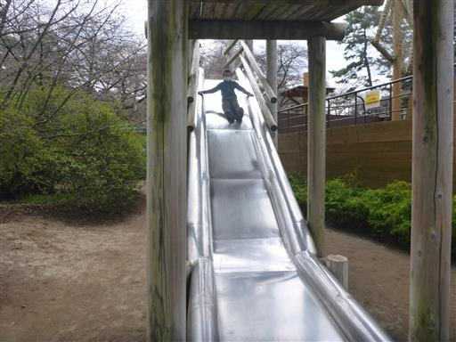
ターザンロープ以外の水上アスレチックを進む。
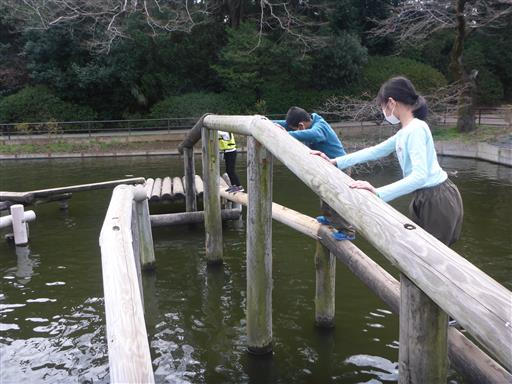
こちらはまず落ちることはない。
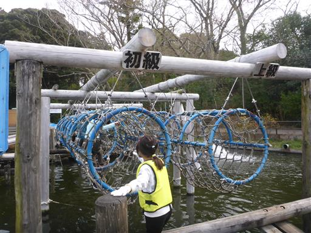
簡単なアスレチックが多いが、下が水のため恐怖心がある。
迂回路も用意されている。
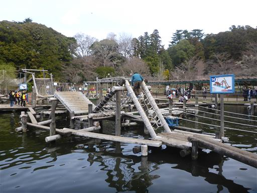
水上コースの最後のアスレチック。落ち着いていけば大丈夫。
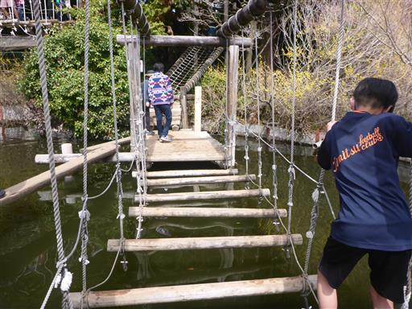
昼食をとったら、アスレチックを再開。
もう1番からやっても空いているので、すいすい進む。
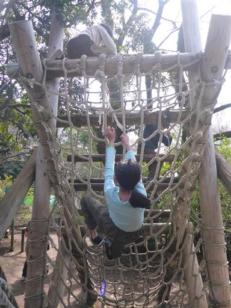
ロープ＋丸太。
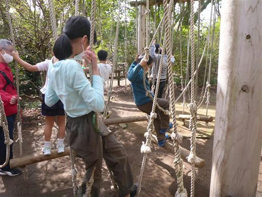
これは難しい。けっこう木が滑る。靴の性能が重要かも。
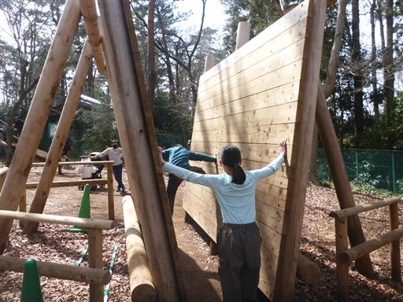
こちらもロープを渡るアスレチック。
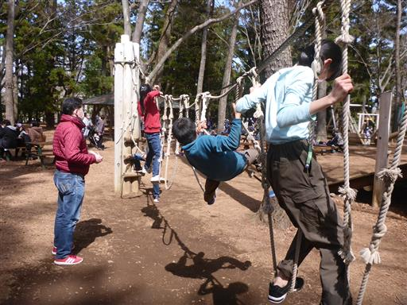
混雑しているいくつかのアスレチックを除いて、ほぼすべてのアスレチックをやる。
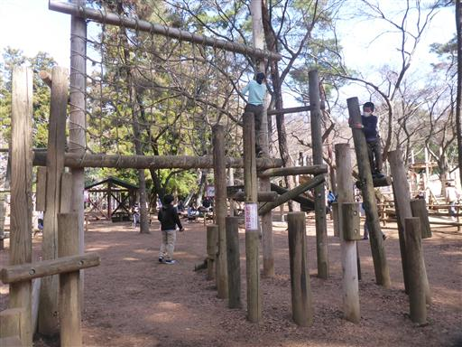
息子はターザンロープのリベンジをやりたいようだが、もう水上コースは大混雑。
諦めて帰ることにする。空いている時に何度も挑戦させてあげればよかった。
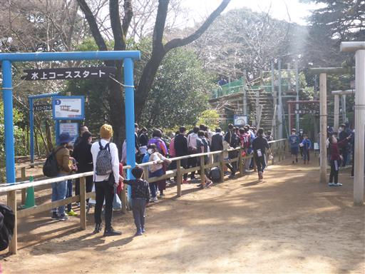
アスレチックを後にする。コロナの影響でこういう施設はあまり来れていなかったが、
久々にみんなで全身運動ができて楽しかった。
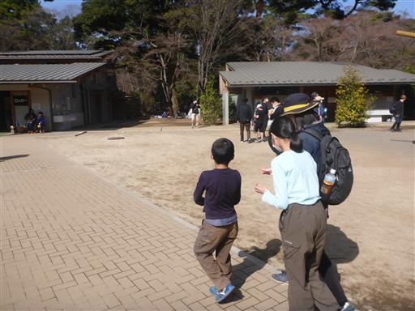